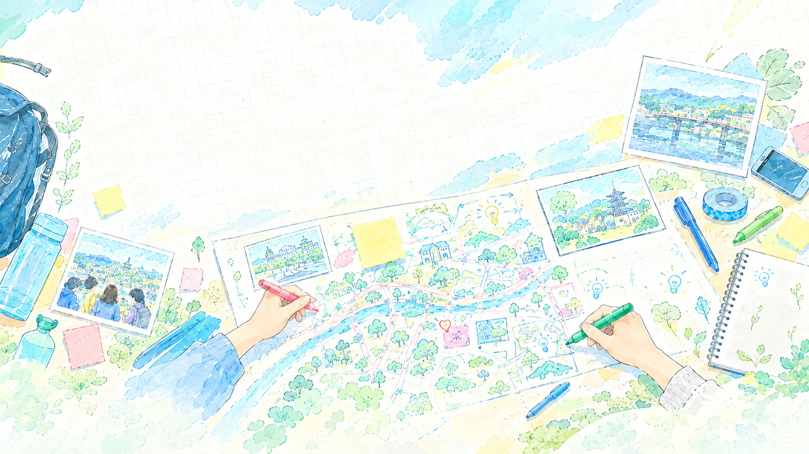

01
つくる
歩くと反応する仕掛けや、まちを舞台にしたゲームを企画・開発しています。（※内容は仮の文章です）

ABOUT
通学路、バス停、階段、川べり。何もないと思っていた場所も、少し見方を変えると遊び場になります。わたしたちは、まちで遊べる仕掛けやゲームをつくり、それを使ったワークショップをひらいています。
WHAT WE DO
01
歩くと反応する仕掛けや、まちを舞台にしたゲームを企画・開発しています。（※内容は仮の文章です）
02
子どもたちと一緒に遊び方を考えるワークショップを企画・運営しています。
03
やってみたこと・わかったことを記録して、まちの人や次の企画につなげます。
PROJECTS
いま動いている企画です。詳しい内容はそれぞれのページで紹介しています。
REPORT
2026年10月3日、宇治市産業会館 多目的ホールで第1回のワークショップをひらきました。参加した子どもたちが考えた「宇治のまちにあったらいいな」が、会場いっぱいに並びました。

「駅やバス停」「通学路」「茶畑」「雲の上」。身近な場所から、思いもよらない場所まで。遊び方は、絵と短い言葉で書いてもらいました。
参加者が描いたシートの一部です。


集まったアイデアは、市内の施設でパネル展示しています。小学生は黄色、中学生は青の台紙。気に入ったアイデアに感想を送れるQRコードも付けました。


PROFILE
企画・開発
宇治市未来キャンパス受講生。いつもの道をもっと面白くしたいと思い、まちで遊べる仕掛けやゲームをつくっています。2026年10月のワークショップでは、企画・当日の運営・ゲームの開発を担当します。